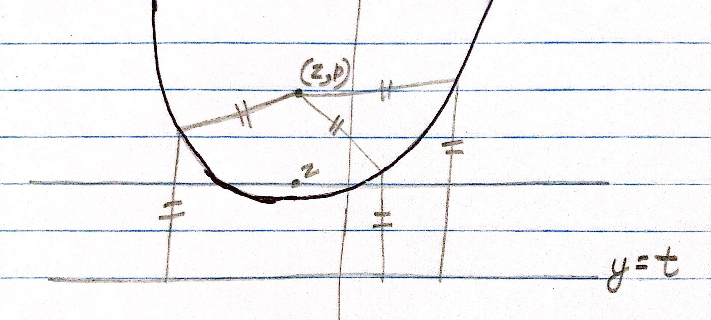
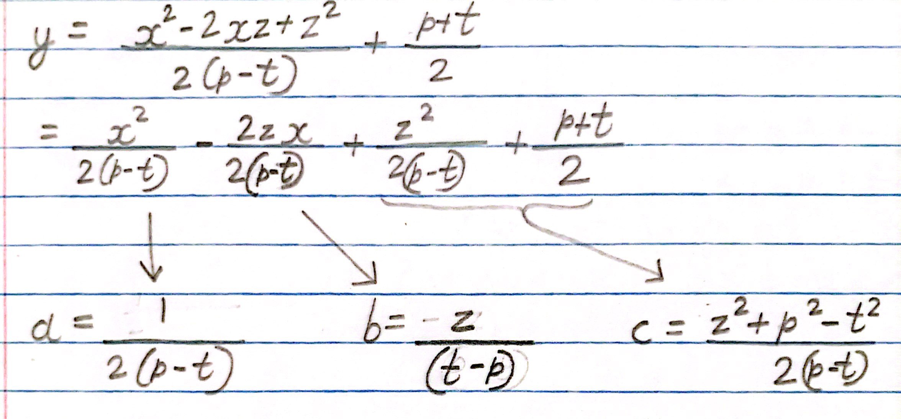
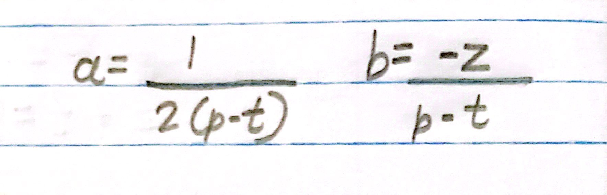
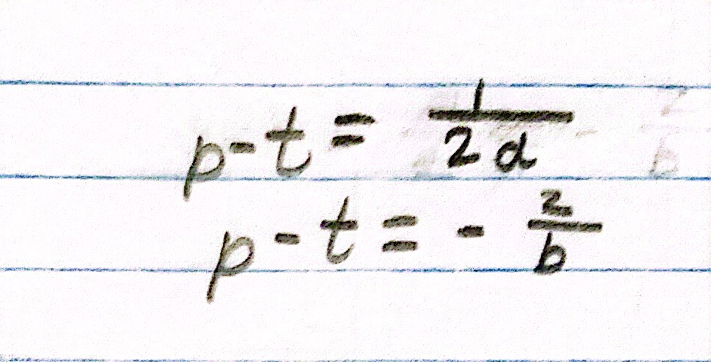
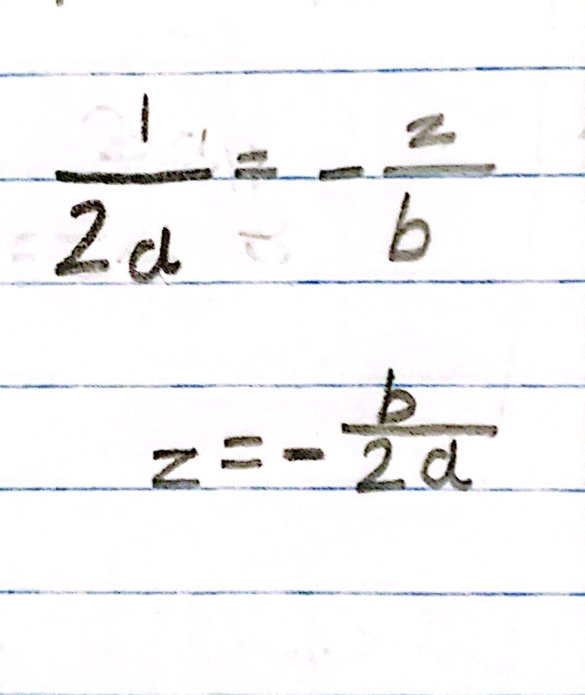

The parabola is defined as the set of all the points that are equidistant from the focus and directrix. All these points taken together form the parabola. On the example below, the focus is the point (z, p) and the directrix is the line y = t:
In the previous article, we derived an equation for a parabola in the form of y = ax2+bx+c:
The axis of symmetry is the line x = z. We can express z in terms of a and b; to do that, we first have to see what a and b are:
Lets make (p - t) the subject:
Putting the two together:
The value of z is -b/2a.